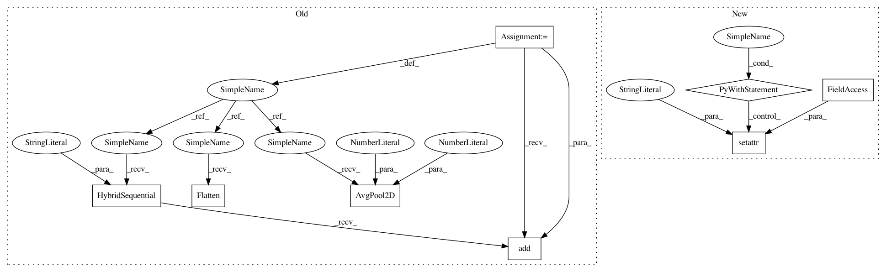

29eac269527a4466dfef282374aed49ce66d9bfb,chainer_/models/nasnet.py,NASNet,__init__,#NASNet#Any#Any#Any#Any#Any#,991
Before Change
self.features.add(stage)
self.features.add(nn.Activation("relu"))
self.features.add(nn.AvgPool2D(
pool_size=7,
strides=1))
self.output = nn.HybridSequential(prefix="")
self.output.add(nn.Flatten())
self.output.add(nn.Dropout(rate=0.5))
self.output.add(nn.Dense(
units=classes,
in_units=in_channels))
def __call__(self, x):
x = self.features(x)
x = self.output(x)
After Change
return_two=False,
first_ordinals=1,
last_ordinals=2)
with self.features.init_scope():
setattr(self.features, "init_block", NASNetInitBlock(
in_channels=in_channels,
out_channels=init_block_channels))
in_channels = init_block_channels
out_channels = stem_blocks_channels[0]
setattr(self.features, "stem1_unit", Stem1Unit(
in_channels=in_channels,
out_channels=out_channels))
prev_in_channels = in_channels
in_channels = out_channels
out_channels = stem_blocks_channels[1]
setattr(self.features, "stem2_unit", Stem2Unit(
in_channels=in_channels,
prev_in_channels=prev_in_channels,
out_channels=out_channels))
prev_in_channels = in_channels
in_channels = out_channels
for i, channels_per_stage in enumerate(channels):
stage = nasnet_dual_path_sequential()
with stage.init_scope():
for j, out_channels in enumerate(channels_per_stage):
if (j == 0) and (i != 0):
unit = ReductionUnit
elif ((i == 0) and (j == 0)) or ((i != 0) and (j == 1)):
unit = FirstUnit
else:
unit = NormalUnit
setattr(stage, "unit{}".format(j + 1), unit(
in_channels=in_channels,
prev_in_channels=prev_in_channels,
out_channels=out_channels))
prev_in_channels = in_channels
in_channels = out_channels
setattr(self.features, "stage{}".format(i + 1), stage)
setattr(self.features, "final_activ", F.relu)
setattr(self.features, "final_pool", partial(
F.average_pooling_2d,
ksize=7,
stride=1))
self.output = SimpleSequential()
with self.output.init_scope():
setattr(self.output, "flatten", partial(
F.reshape,
In pattern: SUPERPATTERN
Frequency: 3
Non-data size: 8
Instances
Project Name: osmr/imgclsmob
Commit Name: 29eac269527a4466dfef282374aed49ce66d9bfb
Time: 2018-09-06
Author: osemery@gmail.com
File Name: chainer_/models/nasnet.py
Class Name: NASNet
Method Name: __init__
Project Name: osmr/imgclsmob
Commit Name: 056338255ea968d28ab462295b308cf475adcdde
Time: 2018-09-05
Author: osemery@gmail.com
File Name: chainer_/models/dpn.py
Class Name: DPN
Method Name: __init__
Project Name: osmr/imgclsmob
Commit Name: 553f777ad245ef3caa799151e34e6cc37bbcb11a
Time: 2020-02-18
Author: osemery@gmail.com
File Name: gluon/gluoncv2/models/mobilenetv2.py
Class Name: MobileNetV2
Method Name: __init__
Project Name: osmr/imgclsmob
Commit Name: 29eac269527a4466dfef282374aed49ce66d9bfb
Time: 2018-09-06
Author: osemery@gmail.com
File Name: chainer_/models/nasnet.py
Class Name: NASNet
Method Name: __init__